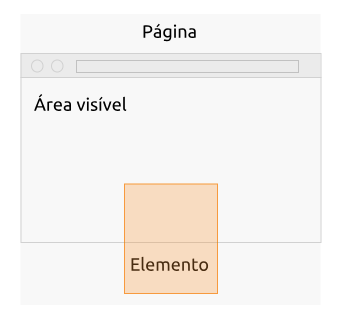

Intersection Observer API
Publicado em:
@alinelee
Nos últimos meses nós conseguimos usufruir bastante da Intersection Observer API que está disponível desde a versão 51 do Chrome.
Implementamos carregamento assíncrono de imagens, paginação infinita, carrosséis entre outras ações na tela dependendo da visibilidade que algum elemento possui.
O que é, o que faz, pra que serve?
O Intersection Observer é uma API que atua como uma sentinela te avisando sempre que certo elemento passar a ficar dentro da área visível da página.

Assim é possível executar qualquer tipo de ação sem ter que ficar observando o scroll da tela, ganhando bastante performance sem deixar o código complexo.
Um exemplo simples
Vamos pensar em um carrossel de imagens, que conforme seja scrollado nós deixamos colorida a bolinha relativa a sua posição.
Para fazer isso nós precisamos primeiro criar o observer que irá disparar um evento quando cada uma das imagens for exibida. Ou seja:
var io = new IntersectionObserver( function(entries) {
entries.forEach(function(entryImage) {
if (entryImage.isIntersecting) {
console.log(entryImage);
}
});
}
);
Utilizando o entryImage nós conseguimos recuperar o elemento, verificar se está visível, suas dimensões, etc. Para mais detalhes sobre o entryImage consulte a documentação aqui.
Depois precisamos selecionar e fazer com que cada uma das imagens sejam observadas:
var images = document.querySelectorAll('.carousel .image');
images.forEach(function(image) {
io.observe(image);
});
Dessa maneira, assim que a borda de cada um dos itens observados ficar visível, a função será executada Porém, existem momentos em que o ideal é que a função seja chamada antes da imagem ser exibida, ou apenas quando ela estiver com a sua metade visível.
Para isso temos algumas configurações disponíveis:
var io = new IntersectionObserver( function(entries) {
entries.forEach(function(entryImage) {
if (entryImage.isIntersecting) {
console.log(entryImage);
}
});
}, {
root: document.querySelector('.carousel'),
rootMargin: '0px',
threshold: 0.5
}
);
rootMargin: Conseguimos definir uma margem no elemento para disparar o evento com antecedência ou após o início da intersecção;

threshold: Permite determinar em qual porcentagem de visibilidade do elemento o evento será disparado. O padrão é 0, caso o ideal seja executar a função com a metade da imagem visível seria 0,5.
Outra configuração interessante é o root, que permite definir um container para os elementos que não seja a página toda.
Visibilidade
Um ponto bom para salientar, que nós já quebramos a cabeça por aqui é que o elemento precisa estar presente na página para ser observado, ou seja se houver um display: none no momento em que observer for cadastrado no elemento nada irá funcionar.
Diferente do visibility: hidden, que funciona normalmente, por nunca deixar de ocupar espaço na tela.
E ocupar espaço na tela é uma parte importante dessa API pois caso os elementos observados tenham tamanho 0x0 o disparo dos eventos pode ser antecipado e acabar acontecendo vários disparos simultâneos.
Polyfill
Infelizmente, por ser relativamente recente, a API não possui um suporte muito abrangente.
Aqui no Elo7, nós utilizamos esse Polyfill. Você pode checar aqui se o suporte atual é suficiente para a sua aplicação.
Conclusão
Esse post foi um apanhado geral sobre como nós utilizamos o Intersetion Observer API nos últimos tempos no Elo7.
Esse é o exemplo completinho:
See the Pen Carrossel by Aline Lee (@alinelee) on CodePen.
Para se aprofundar mais no assunto você pode consultar a documentação completa, ou esse artigo bem interessante do Google.
Se você ficou com alguma dúvida, ou quer compartilhar a sua experiência com a API fique à vontade para utilizar a caixa de comentários. Obrigada e até a próxima!